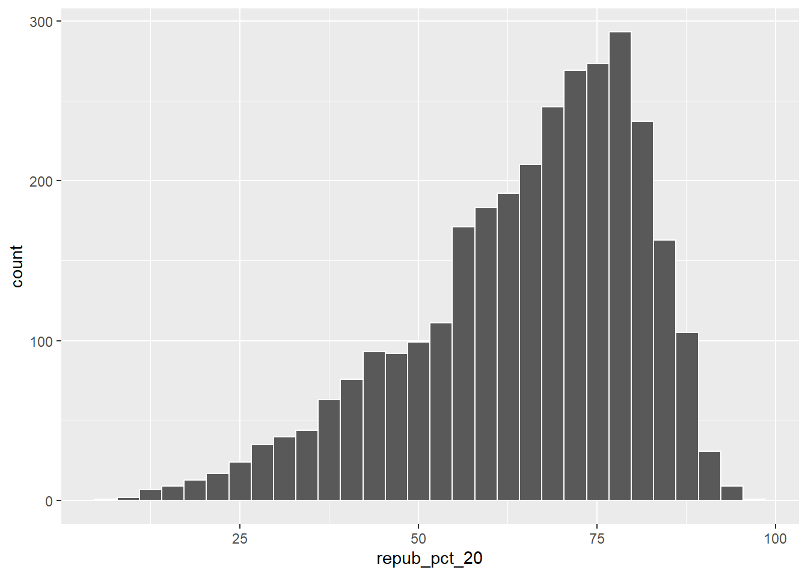
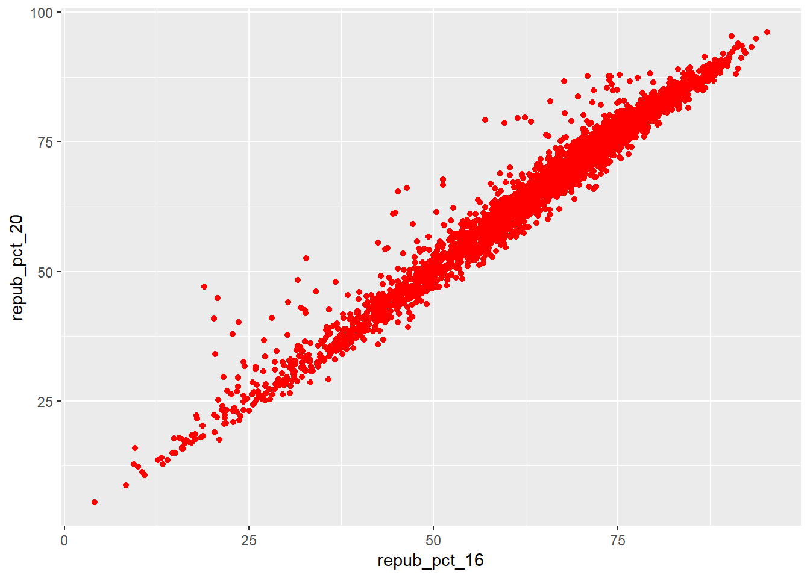
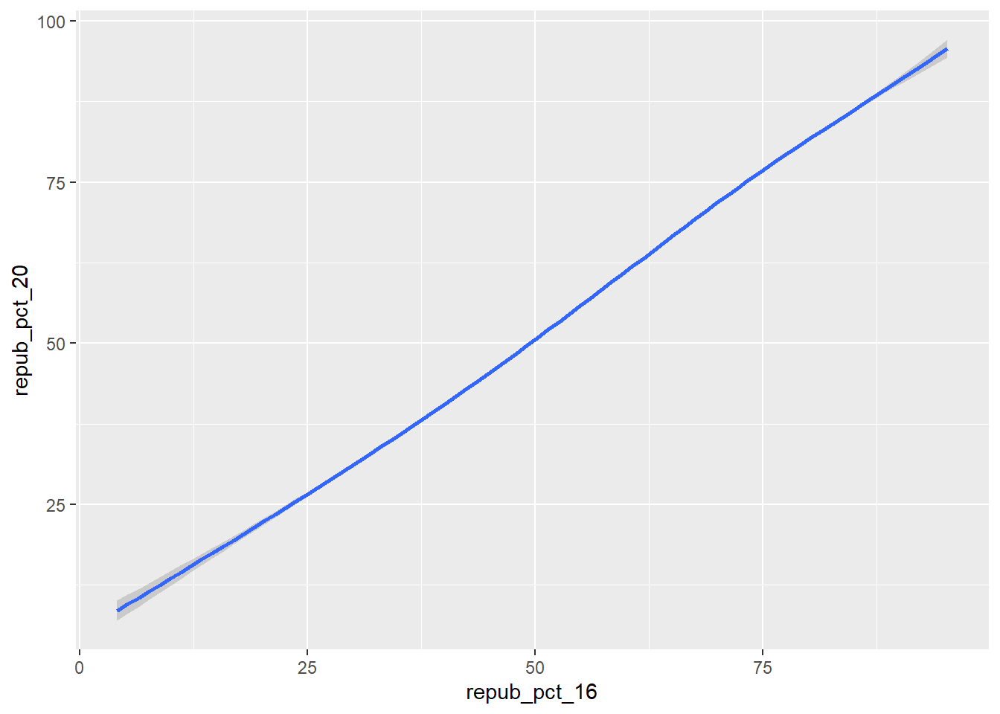
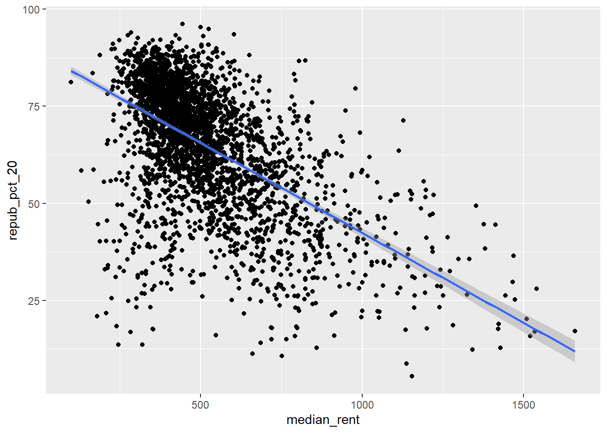
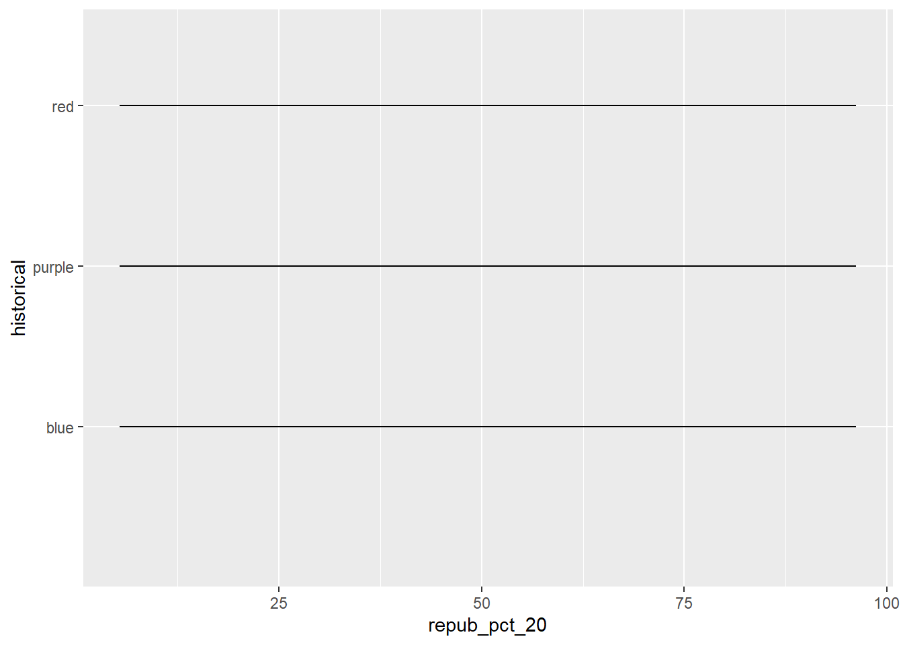

Use this file for practice with the bivariate viz in-class activity. Refer to the class website [here]https://hash-mac.github.io/stat112site-s25/activities/04-bivariate-viz.html#exercises-required) for details.
8.1 Exercises (required)
Github user Tony McGovern has compiled and made available 2020/2016/2012 presidential election results for most of 3000+ U.S. counties, except Alaska. (Image: Wikimedia Commons)
A wrangled version of this data, is imported below, after being combined with:
2013 county-level demographics from the df_county_demographics data set from the choroplethr R package
`stat_bin()` using `bins = 30`. Pick better value with `binwidth`.

Exercise 1: Quantitative vs Quantitative Intuition Check
Be Quick
Don’t spend more than 3 minutes on this!
Below is a scatterplot of the Republican support in 2020 vs 2016. Notice that:
both variables are quantitative, and get their own axes
the response variable is on the y-axis, demonstrating how repub_pct_20 might be predicted by repub_pct_16, not vice versa
Try to replicate this using ggplot(). THINK:
What info do you need to set up the canvas?
What geometric layer (geom_???) might add these dots / points for each county? We haven’t learned this yet, just take some guesses.
ggplot(elections, aes(x = repub_pct_16, y = repub_pct_20)) +geom_point()
Exercise 2: 2 Quantitiative Variables
Run each chunk below to build up a a scatterplot of repub_pct_20 vs repub_pct_16 with different glyphs representing each county. Address or think about any prompts in the comments (#).
# Set up the plotting frame# How does this differ than the frame for our histogram of repub_pct_20 alone? - this adds another element, creating a bivariate visualization.ggplot(elections, aes(y = repub_pct_20, x = repub_pct_16))
# Add a layer of points for each county# Take note of the geom!ggplot(elections, aes(y = repub_pct_20, x = repub_pct_16)) +geom_point()
# Change the shape of the points# What happens if you change the shape to another number? - there is a variety of shapes to choose from ggplot(elections, aes(y = repub_pct_20, x = repub_pct_16)) +geom_point(shape =10)
# YOU TRY: Modify the code to make the points "orange"# NOTE: Try to anticipate if "color" or "fill" will be useful here. Then try both. - color works, fill does notggplot(elections, aes(y = repub_pct_20, x = repub_pct_16)) +geom_point(color ="red", fill ="black")

# Add a layer that represents each county by the state it's in# Take note of the geom and the info it needs to run!ggplot(elections, aes(y = repub_pct_20, x = repub_pct_16)) +geom_text(aes(label = state_abbr))
Exercise 3: Reflect
Summarize the relationship between the Republican support in 2020 and 2016. Be sure to comment on:
the strength of the relationship (weak/moderate/strong)
the direction of the relationship (positive/negative)
outliers (in what state do counties deviate from the national trend? Any ideas why this might be the case?)
This is a linear relationship with a strong strength. It is a positive relationship, with potential outliers from Texas, which could indicate a higher proportion of support in 2020 than in 2016, which might be because of a dislike of democratic options or a like of Trump’s performance as president.
Exercise 4: Visualizing trend
The trend of the relationship between repub_pct_20 and repub_pct_16 is clearly positive and (mostly) linear. We can highlight this trend by adding a model “smooth” to the plot:
ggplot(elections, aes(y = repub_pct_20, x = repub_pct_16)) +geom_point() +geom_smooth()
Part a
Construct a new plot that contains the model smooth but does not include the individual point glyphs.
ggplot(elections, aes(y = repub_pct_20, x = repub_pct_16)) +geom_smooth()
`geom_smooth()` using method = 'gam' and formula = 'y ~ s(x, bs = "cs")'

Part b
By default, geom_smooth() adds a smooth, localized model line. To examine the “best” linear model, we can specify method = "lm". It’s pretty similar in this example!
ggplot(elections, aes(y = repub_pct_20, x = repub_pct_16)) +geom_point() +geom_smooth(method ="lm")
Exercise 5: Your Turn
To examine how the 2020 results are related to some county demographics, construct scatterplots of repub_pct_20 vs median_rent, and repub_pct_20 vs median_age. Summarize the relationship between these two variables and comment on which is the better predictor of repub_pct_20, median_rent or median_age.
# Scatterplot of repub_pct_20 vs median_rentggplot(elections, aes(y = repub_pct_20, x = median_rent)) +geom_point() +geom_smooth(method ="lm")
`geom_smooth()` using formula = 'y ~ x'

# Scatterplot of repub_pct_20 vs median_ageggplot(elections, aes(y = repub_pct_20, x = median_age)) +geom_point() +geom_smooth(method ="lm")
`geom_smooth()` using formula = 'y ~ x'
Comparing republican county support to median rent results is a weak to moderate strength negative relationship, meaning the higher rent the less support there was for the republican party. However, this plot has many outliers.
Comparing republican county supporter to median age results in a weak positive relationship, meaning that with higher age, there was generally higher support for the republican party. However, this plot has a lot of outliers.
Exercise 6: A Sad Scatterplot
Next, let’s explore the relationship between a county’s 2020 Republican support repub_pct_20 and the historical political trends in its state. In this case repub_pct_20 is quantitative, but historical is categorical. Explain why a scatterplot might not be an effective visualization for exploring this relationship. (What questions does / doesn’t it help answer?)
ggplot(elections, aes(y = repub_pct_20, x = historical)) +geom_point()
Because the variables on the X axis are categorical, it makes it very difficult to vizualize the data with a scatterplot.
Exercise 7: Quantitative vs Categorical – Violins & Boxes
Though the above scatterplot did group the counties by historical category, it’s nearly impossible to pick out meaningful patterns in 2020 Republican support in each category. Let’s try adding 2 different geom layers to the frame:
Box plots are constructed from five numbers - the minimum, 25th percentile, median, 75th percentile, and maximum value of a quantitative variable:
REFLECT:
Summarize what you’ve learned about the 2020 Republican county-level support within and between red/purple/blue states.
Compared to how each state historically voted, there were generally higher rates of republican support than normal. As the state became more red, so too did the deviance from their normal voting patterns.
Exercise 8: Quantitative vs Categorical – Intuition Check
Be Quick
Don’t spend more than 3 minutes on this!
We can also visualize the relationship between repub_pct_20 and historical using our familiar density plots. In the plot below, notice that we simply created a separate density plot for each historical category. (The plot itself is “bad” but we’ll fix it below.) Try to adjust the code chunk below, which starts with a density plot of repub_pct_20 alone, to re-create this image.
# doesn't work!!ggplot(elections, aes(x = repub_pct_20, y = historical)) +geom_density()

Exercise 9: Quantitative vs Categorical – Density Plots
Work through the chunks below and address the comments therein.
# Name two "bad" things about this plot - The colors do not match the value names. You may not like the order the values are in. The labels aren't super clear for those unfamiliar with the data.ggplot(elections, aes(x = repub_pct_20, fill = historical)) +geom_density()
# What does scale_fill_manual do? - It lets you assign colors to each value of the scale.ggplot(elections, aes(x = repub_pct_20, fill = historical)) +geom_density() +scale_fill_manual(values =c("blue", "purple", "red"))
# What does alpha = 0.5 do? - it alters how transparent each value is# Play around with different values of alpha, between 0 and 1 (0 is invisible, 1 is full opacity)ggplot(elections, aes(x = repub_pct_20, fill = historical)) +geom_density(alpha = .5) +scale_fill_manual(values =c("blue", "purple", "red"))
# What does facet_wrap do?! - it gives each category its own contained sectionggplot(elections, aes(x = repub_pct_20, fill = historical)) +geom_density() +scale_fill_manual(values =c("blue", "purple", "red")) +facet_wrap(~ historical)
# Let's try a similar grouping strategy with a histogram instead of density plot.# Why is this terrible? - you can't tell good trends within each category, and it is overall hard to look at and readggplot(elections, aes(x = repub_pct_20, fill = historical)) +geom_histogram(color ="white") +scale_fill_manual(values =c("blue", "purple", "red"))
Exercise 10
We’ve now learned 3 (of many) ways to visualize the relationship between a quantitative and categorical variable: side-by-side violins, boxplots, and density plots.
Which do you like best? - Boxplots or density plots
What is one pro of density plots relative to boxplots? - it is easier to view the overall relationship trend
What is one con of density plots relative to boxplots? - It is harder to understand the key values of the minimum, 25th percentile, median, 75th percentile, and maximum value of a quantitative variable
Exercise 11: Categorical vs Categorical – Intuition Check
Finally, let’s simply explore who won each county in 2020 (winner_20) and how this breaks down by historical voting trends in the state. That is, let’s explore the relationship between 2 categorical variables! Following the same themes as above, we can utilize grouping features such as fill/color or facets to distinguish between different categories of winner_20 and historical.
Be Quick
Spend at most 5 minutes on the following intuition check. Adjust the code below to recreate the following two plots.
# Plot 1: adjust this to recreate the top plotggplot(elections, aes(x = historical, fill = winner_20)) +geom_bar()
# Plot 2: adjust this to recreate the bottom plotggplot(elections, aes(x = winner_20)) +geom_bar() +facet_wrap(~ historical)
Exercise 12: Categorical vs Categorical
Construct the following 4 bar plot visualizations.
# A stacked bar plot# How are the "historical" and "winner_20" variables mapped to the plot, i.e. what roles do they play? - Historical allows for grouping of each category and provides context. Winner_20 shows the distribution of votes within each category. ggplot(elections, aes(x = historical, fill = winner_20)) +geom_bar()
# A faceted bar plotggplot(elections, aes(x = winner_20)) +geom_bar() +facet_wrap(~ historical)
# A side-by-side bar plot# Note the new argument to geom_barggplot(elections, aes(x = historical, fill = winner_20)) +geom_bar(position ="dodge")
# A proportional bar plot# Note the new argument to geom_barggplot(elections, aes(x = historical, fill = winner_20)) +geom_bar(position ="fill")
Part a
Name one pro and one con of using the “proportional bar plot” instead of one of the other three options.
Pro: This really shows how much of the vote each party got in total
Con: It doesn’t show the count (unlike in the side by side bar plot), thus making it harder to see that historically red states voted for the republican party at a much higher count than blue or purple states did
Part b
What’s your favorite bar plot from part and why?
My favorite will depend on what the goal of the data viz is; In this case I like the proportional bar plot because in my opinion it is the easiest to see variance.
Source Code
---title: "Bivariate Viz"---Use this file for practice with the **bivariate viz** in-class activity.Refer to the class website \[here\]https://hash-mac.github.io/stat112site-s25/activities/04-bivariate-viz.html#exercises-required) for details.## Exercises (required)[Github user Tony McGovern](https://github.com/tonmcg/US_County_Level_Election_Results_08-20) has compiled and made available 2020/2016/2012 presidential election results for most of 3000+ U.S. counties, except Alaska.(Image: [Wikimedia Commons](https://commons.wikimedia.org/wiki/File:Map_of_USA_with_county_outlines_(black_%26_white).png))A wrangled version of this data, is imported below, after being combined with:- 2013 county-level demographics from the `df_county_demographics` data set from the `choroplethr` R package- historical voting trends in the state in which the county falls (from <https://www.270towin.com/content/blue-and-red-states>): - red = consistently Republican - blue = consistently Democratic - purple = something in between```{r}##load tidyverselibrary(tidyverse)# Load dataelections <-read.csv("https://mac-stat.github.io/data/election_2020_county.csv")# Check it outhead(elections)```We'll use this data to explore voting outcomes within the U.S.'s 2-party system.Here's a list of candidates by year:| year | Republican candidate | Democratic candidate ||:-----|:---------------------|:---------------------|| 2020 | Donald Trump | Joe Biden || 2016 | Donald Trump | Hillary Clinton || 2012 | Mitt Romney | Barack Obama |### Exercise 0: Review {.unnumbered}#### Part a {.unnumbered}How many, or roughly what percent, of the 3000+ counties did the Republican candidate win in 2020?- Take a guess.- Then make a plot of the `winner` variable.- Then discuss what follow-up questions you might have (and that our data might help us answer).```{r}# added geom_bar() to the plotggplot(elections, aes(x = winner_20)) +geom_bar()```#### Part b {.unnumbered}The `repub_pct_20` variable provides more detail about the Republican support in each county.Construct a plot of `repub_pct_20`.Notice that the distribution of Republican support from county to county is slightly **left skewed** or **negatively skewed**.What follow-up questions do you have?```{r}ggplot(elections, aes(x = repub_pct_20)) +geom_histogram(color ="white")```### Exercise 1: Quantitative vs Quantitative Intuition Check {.unnumbered}::: {.callout-important title="Be Quick"}Don't spend more than 3 minutes on this!:::Below is a **scatterplot** of the Republican support in 2020 vs 2016.Notice that:- both variables are quantitative, and get their own axes- the *response* variable is on the y-axis, demonstrating how `repub_pct_20` might be predicted by `repub_pct_16`, not vice versaTry to replicate this using `ggplot()`.THINK:- What info do you need to set up the canvas?- What geometric layer (`geom_???`) might add these dots / points for each county? We haven't learned this yet, just take some guesses.{width="50%"}```{r}ggplot(elections, aes(x = repub_pct_16, y = repub_pct_20)) +geom_point()```### Exercise 2: 2 Quantitiative Variables {.unnumbered}Run each chunk below to build up a a scatterplot of `repub_pct_20` vs `repub_pct_16` with different *glyphs* representing each county.Address or think about any prompts in the comments (`#`).```{r eval = FALSE}# Set up the plotting frame# How does this differ than the frame for our histogram of repub_pct_20 alone? - this adds another element, creating a bivariate visualization.ggplot(elections, aes(y = repub_pct_20, x = repub_pct_16))``````{r eval = FALSE}# Add a layer of points for each county# Take note of the geom!ggplot(elections, aes(y = repub_pct_20, x = repub_pct_16)) + geom_point()``````{r eval = FALSE}# Change the shape of the points# What happens if you change the shape to another number? - there is a variety of shapes to choose from ggplot(elections, aes(y = repub_pct_20, x = repub_pct_16)) + geom_point(shape = 10)``````{r}# YOU TRY: Modify the code to make the points "orange"# NOTE: Try to anticipate if "color" or "fill" will be useful here. Then try both. - color works, fill does notggplot(elections, aes(y = repub_pct_20, x = repub_pct_16)) +geom_point(color ="red", fill ="black")``````{r eval = FALSE}# Add a layer that represents each county by the state it's in# Take note of the geom and the info it needs to run!ggplot(elections, aes(y = repub_pct_20, x = repub_pct_16)) + geom_text(aes(label = state_abbr))```### Exercise 3: Reflect {.unnumbered}Summarize the relationship between the Republican support in 2020 and 2016.Be sure to comment on:- the strength of the relationship (weak/moderate/strong)\- the direction of the relationship (positive/negative)\- outliers (in what state do counties deviate from the national trend? Any ideas why this might be the case?)This is a linear relationship with a strong strength.It is a positive relationship, with potential outliers from Texas, which could indicate a higher proportion of support in 2020 than in 2016, which might be because of a dislike of democratic options or a like of Trump's performance as president.### Exercise 4: Visualizing trend {.unnumbered}The trend of the relationship between `repub_pct_20` and `repub_pct_16` is clearly positive and (mostly) linear.We can highlight this trend by adding a model "smooth" to the plot:```{r eval = FALSE}ggplot(elections, aes(y = repub_pct_20, x = repub_pct_16)) + geom_point() + geom_smooth()```#### Part a {.unnumbered}Construct a new plot that contains the model smooth but does *not* include the individual point glyphs.```{r}ggplot(elections, aes(y = repub_pct_20, x = repub_pct_16)) +geom_smooth()```#### Part b {.unnumbered}By default, `geom_smooth()` adds a smooth, localized model line.To examine the "best" *linear model*, we can specify `method = "lm"`.It's pretty similar in this example!```{r eval = FALSE}ggplot(elections, aes(y = repub_pct_20, x = repub_pct_16)) + geom_point() + geom_smooth(method = "lm")```### Exercise 5: Your Turn {.unnumbered}To examine how the 2020 results are related to some county demographics, construct scatterplots of `repub_pct_20` vs `median_rent`, and `repub_pct_20` vs `median_age`.Summarize the relationship between these two variables and comment on which is the better predictor of `repub_pct_20`, `median_rent` or `median_age`.```{r}# Scatterplot of repub_pct_20 vs median_rentggplot(elections, aes(y = repub_pct_20, x = median_rent)) +geom_point() +geom_smooth(method ="lm")# Scatterplot of repub_pct_20 vs median_ageggplot(elections, aes(y = repub_pct_20, x = median_age)) +geom_point() +geom_smooth(method ="lm")```Comparing republican county support to median rent results is a weak to moderate strength negative relationship, meaning the higher rent the less support there was for the republican party.However, this plot has many outliers.Comparing republican county supporter to median age results in a weak positive relationship, meaning that with higher age, there was generally higher support for the republican party.However, this plot has a lot of outliers.### Exercise 6: A Sad Scatterplot {.unnumbered}Next, let's explore the relationship between a county's 2020 Republican support `repub_pct_20` and the `historical` political trends in its state.In this case `repub_pct_20` is **quantitative**, but `historical` is **categorical**.Explain why a scatterplot might *not* be an effective visualization for exploring this relationship.(What questions does / doesn't it help answer?)```{r}ggplot(elections, aes(y = repub_pct_20, x = historical)) +geom_point()```Because the variables on the X axis are categorical, it makes it very difficult to vizualize the data with a scatterplot.### Exercise 7: Quantitative vs Categorical -- Violins & Boxes {.unnumbered}Though the above scatterplot *did* group the counties by `historical` category, it's nearly impossible to pick out meaningful patterns in 2020 Republican support in each category.Let's try adding 2 different `geom` layers to the frame:```{r eval = FALSE}# Side-by-side violin plotsggplot(elections, aes(y = repub_pct_20, x = historical)) + geom_violin()``````{r eval = FALSE}# Side-by-side boxplots (defined below)ggplot(elections, aes(y = repub_pct_20, x = historical)) + geom_boxplot()```Box plots are constructed from five numbers - the minimum, 25th percentile, median, 75th percentile, and maximum value of a quantitative variable:{width="50%"}**REFLECT:**Summarize what you've learned about the 2020 Republican county-level support within and between red/purple/blue states.Compared to how each state historically voted, there were generally higher rates of republican support than normal.As the state became more red, so too did the deviance from their normal voting patterns.### Exercise 8: Quantitative vs Categorical -- Intuition Check {.unnumbered}::: {.callout-important title="Be Quick"}Don't spend more than 3 minutes on this!:::We can also visualize the relationship between `repub_pct_20` and `historical` using our familiar density plots.In the plot below, notice that we simply created a separate density plot for each `historical` category.(The plot itself is "bad" but we'll fix it below.) Try to adjust the code chunk below, which starts with a density plot of `repub_pct_20` alone, to re-create this image.{width="50%"}```{r}# doesn't work!!ggplot(elections, aes(x = repub_pct_20, y = historical)) +geom_density()```### Exercise 9: Quantitative vs Categorical -- Density Plots {.unnumbered}Work through the chunks below and address the comments therein.```{r eval = FALSE}# Name two "bad" things about this plot - The colors do not match the value names. You may not like the order the values are in. The labels aren't super clear for those unfamiliar with the data.ggplot(elections, aes(x = repub_pct_20, fill = historical)) + geom_density()``````{r eval = FALSE}# What does scale_fill_manual do? - It lets you assign colors to each value of the scale.ggplot(elections, aes(x = repub_pct_20, fill = historical)) + geom_density() + scale_fill_manual(values = c("blue", "purple", "red"))``````{r eval = FALSE}# What does alpha = 0.5 do? - it alters how transparent each value is# Play around with different values of alpha, between 0 and 1 (0 is invisible, 1 is full opacity)ggplot(elections, aes(x = repub_pct_20, fill = historical)) + geom_density(alpha = .5) + scale_fill_manual(values = c("blue", "purple", "red"))``````{r eval = FALSE}# What does facet_wrap do?! - it gives each category its own contained sectionggplot(elections, aes(x = repub_pct_20, fill = historical)) + geom_density() + scale_fill_manual(values = c("blue", "purple", "red")) + facet_wrap(~ historical)``````{r eval = FALSE}# Let's try a similar grouping strategy with a histogram instead of density plot.# Why is this terrible? - you can't tell good trends within each category, and it is overall hard to look at and readggplot(elections, aes(x = repub_pct_20, fill = historical)) + geom_histogram(color = "white") + scale_fill_manual(values = c("blue", "purple", "red"))```### Exercise 10 {.unnumbered}We've now learned 3 (of many) ways to visualize the relationship between a quantitative and categorical variable: side-by-side violins, boxplots, and density plots.- Which do you like best? - Boxplots or density plots- What is one pro of density plots relative to boxplots? - it is easier to view the overall relationship trend- What is one con of density plots relative to boxplots? - It is harder to understand the key values of the minimum, 25th percentile, median, 75th percentile, and maximum value of a quantitative variable### Exercise 11: Categorical vs Categorical -- Intuition Check {.unnumbered}Finally, let's simply explore who *won* each county in 2020 (`winner_20`) and how this breaks down by `historical` voting trends in the state.That is, let's explore the relationship between 2 categorical variables!Following the same themes as above, we can utilize grouping features such as fill/color or facets to distinguish between different categories of `winner_20` and `historical`.::: {.callout-important title="Be Quick"}Spend at most 5 minutes on the following intuition check.Adjust the code below to recreate the following two plots.:::{width="60%"}```{r}# Plot 1: adjust this to recreate the top plotggplot(elections, aes(x = historical, fill = winner_20)) +geom_bar()``````{r}# Plot 2: adjust this to recreate the bottom plotggplot(elections, aes(x = winner_20)) +geom_bar() +facet_wrap(~ historical)```### Exercise 12: Categorical vs Categorical {.unnumbered}Construct the following 4 bar plot visualizations.```{r eval = FALSE}# A stacked bar plot# How are the "historical" and "winner_20" variables mapped to the plot, i.e. what roles do they play? - Historical allows for grouping of each category and provides context. Winner_20 shows the distribution of votes within each category. ggplot(elections, aes(x = historical, fill = winner_20)) + geom_bar()``````{r eval = FALSE}# A faceted bar plotggplot(elections, aes(x = winner_20)) + geom_bar() + facet_wrap(~ historical)``````{r eval = FALSE}# A side-by-side bar plot# Note the new argument to geom_barggplot(elections, aes(x = historical, fill = winner_20)) + geom_bar(position = "dodge")``````{r eval = FALSE}# A proportional bar plot# Note the new argument to geom_barggplot(elections, aes(x = historical, fill = winner_20)) + geom_bar(position = "fill")```#### Part a {.unnumbered}Name one pro and one con of using the "proportional bar plot" instead of one of the other three options.- Pro: This really shows how much of the vote each party got in total- Con: It doesn't show the count (unlike in the side by side bar plot), thus making it harder to see that historically red states voted for the republican party at a much higher count than blue or purple states did#### Part b {.unnumbered}What's your favorite bar plot from part and why?- My favorite will depend on what the goal of the data viz is; In this case I like the proportional bar plot because in my opinion it is the easiest to see variance.


.png){kind=link}